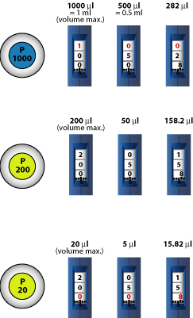

Located at the top of the micropipette, the plunger button is used to aspirate and dispense liquids. Pressing the plunger button to the first stop draws liquid into the tip, while pressing it to the second stop dispenses the liquid. Rotating the plunger clockwise increases the volume, while rotating it counterclockwise decreases the volume.
Positioned near the top of the micropipette, the ejector button is used to release the pipette tip after use. Pressing the ejector button pushes the tip off the micropipette, allowing for easy disposal.
Some micropipette models feature a display window on the volume adjustment dial. This window shows the selected volume, allowing users to confirm the volume setting at a glance.
The shaft is the main body of the micropipette. It houses the internal mechanisms responsible for aspirating and dispensing liquids.
The tip cone is the tapered end of the micropipette shaft where the pipette tip is attached. It ensures a secure and leak-proof connection between the micropipette and the tip.
What does turning the plunger button do?
Choose a pipette tip appropriate for the volume you are measuring. Make sure the tip size matches the micropipette's volume range. Ensure the tip is clean and free from any contamination.
Adjust the volume by turning the plunger button to the desired amount. Be careful to set it precisely; turning the dial clockwise increases the volume, while turning it counterclockwise decreases it. Confirm the volume displayed on the micropipette matches the volume you intend to pipette.
Attach the selected pipette tip firmly onto the micropipette. Push it onto the tip holder until you feel a slight click, indicating it's securely attached. Avoid touching the tip's inner surface to prevent contamination.
Depress the plunger button to the first stop to draw the liquid into the tip. Immerse the tip into the liquid sample, ensuring it reaches below the surface without touching the vessel's bottom.
Position the tip over the desired destination, and slowly depress the plunger to the second stop to dispense the liquid. Wait a moment to ensure all liquid is expelled from the tip, then carefully remove the tip from the container to avoid splashing or dripping.
After dispensing the liquid, eject the used tip by pressing the ejector button. Ensure it is safely disposed of in a designated waste container.
In forward pipetting, what is a micropipette's second stop used for?
Before setting the volume, familiarize yourself with the micropipette's volume range. Micropipettes come in various sizes, each with a specific volume range. Ensure that the volume you intend to pipette falls within the micropipette's capacity.
The micropipette has a volume lock mechanism, ensure it is unlocked before adjusting the volume. The shaft lock prevents accidental changes to the volume setting during pipetting. Typically, you can unlock the dial by twisting it counterclockwise until it clicks into place.
Grip the pipette firmly and rotate it to the desired volume setting.
Once you've set the volume, double-check the volume indicator on the volume adjustment dial to confirm that it matches the intended volume. Ensure there are no discrepancies between the selected volume and the volume displayed on the micropipette.
If your micropipette has a volume lock mechanism, you can lock the volume setting to prevent accidental changes during pipetting. To lock the volume setting, twist the lock lever into place. This secures the selected volume and prevents unintentional adjustments.
You need to aspirate 540 uL of liquid. Select a pipette from the drop down menu, then set the pipette to the correct volume.
You need to aspirate 154 uL of liquid. Select a pipette from the drop down menu, then set the pipette to the correct volume.
You need to aspirate 18 uL of liquid. Select a pipette from the drop down menu, then set the pipette to the correct volume.